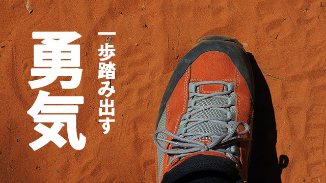

「恐れずに自分のやりたいことをやれ！」
親として我が子に伝えたいことは何かと問われるなら、私はちゅうちょなく上の言葉を言うでしょう。
恐れないこと。自分らしく好きに人生を生きること。この二つは何よりも大切だと身にしみて思うからです。
私たちは生きる上であまりにも物事を恐れ結果として自分の可能性を大きく制限していることになかなか気づきません。
それは人生に「正解」を求めすぎるからです。
「間違えてはいけない」「失敗したら終わりだ」「コースを外れたら食べていけない」
そんな恐れに囚われるあまり、せっかくの才能を活かしきれず満たされない思い、空しさを抱えて生きる人の何と多いことか。
人生に正解などないのに「正しい答え」があると思い込んで、その正しいと思われる道を探し求める。そして「正解を得たはずなのにおかしい」「何か満たされない」とまた遠くに「答え」を見つける旅に出てしまう。
まるで正解を求めて不幸になるルートを辿っているかのようです。
最近の風潮として、子を持つ親も若い人たちもひと昔前に比べて「ルート」から外れることをとても恐れるようになっています。
良い学校へ入るためには受験勉強を頑張る。良い会社に入るために就活を頑張る。そして婚活し子どもが出来たら同じようなルートを歩ませる。そうして最後は終活と、決まりきったルートに乗っからないと安心できない。
この、誰が決めたか分からないようなルート（ルール）を盲信すること。世間で正しいとされている道にしがみつく生き方。これらは正解でも何でもなく、むしろ危険でさえあるといえます。
それは例えて言うなら、音楽の道に進みたいのに営業マンになるような選択であり、先に言ったように不幸になるルートだからです。
親と話すといまだにこんなことを言う人が多い。
「音楽なんて食べていけるはずない。ちゃんと大学の、できれば理工系に進んでもらいたい。」
要するに「好きな道」じゃ食えない。そんな夢物語じゃなくて現実的に考えるべきだということでしょう。
しかしそれなら「現実的」とは何でしょうか。
自分のやりたいことこそ現実的
人と同じ道を歩み、好きでもないことを嫌々やり、自らの可能性を十分発揮せず空しさを抱えて生きていくことが現実的（堅実）な人生ということでしょうか。
それならそんな「現実」はいらないのではないでしょうか。
自分のやりたいこと＝夢物語
好きでもないことを世間体のためにやる＝現実的
こんな図式を今でも信じる人に言いたいことは、職業を例にするなら大企業や花形産業なら安泰という時代などとっくに過ぎ去り、今や一部の真に実力のある人間以外は居場所を見つけることは難しいというのが「現実」だということです。
学校や公務員でさえ例外ではありません。
むしろこれからの時代に必要な「現実的生き方」とは、恐れず自分のやりたいことを突き詰めることでしか獲得できないのではないでしょうか。
時代遅れの安全なルートでもなく、世間や他人の目を意識した「正しい生き方」でもなく、自分の得意（特質）を徹底的に活かすことではじめて自分だけのスペシャルなポジションを手に入れることができる。
そのためにも子どもの時から好きな分野、得意な分野を見つけ、それを伸ばすことを周囲の大人は奨励し続けなければならない。
誰でも勉強に限らず、好きなものや苦労せずともできてしまう得意なものを持っています。
「そんなことばかりやっていたら将来困るぞ」とか「英語だけできても他の教科もまんべんなくできないとダメだ」などと否定せず、特質を伸ばすことに親も教師も力を注いで欲しいのです。
たとえ多少偏りがあったりバランスが悪かったり感じようと子どもが「好きな分野」を喜んで追求していけるよう導いて欲しいと思います。
そのほうが後々成功しやすいし、充足感や達成感を得やすいからです。要するに幸せな人生を歩む可能性が高いということです。
好きなことは創意工夫し努力することに苦痛は感じません。好きなことなら苦労も励みになり、困難を乗り越えていくことに喜びさえ感じるでしょう。
私の言っていることがあまりに単純すぎると感じるなら、その人がむしろ物事を複雑にとらえ過ぎています。古い価値観や固定観念にとらわれているのです。
真実は常にシンプルです。
そう思えない人は子どもの頃から恐らく「好きなことじゃメシが食えない」とか「好き勝手は良くない」など根拠のない言葉にさらされ続けてきたのでしょう。
だから自分の「好き」を追究することを恐れているのです。「好きだからやる」ということに罪悪感─罪悪感が言い過ぎなら─後ろめたさを抱えているのではないでしょうか。
個人的な話ですが、私は若い頃から自分のやりたいこと、好きなことしかやらないできました。確かに当時人から「ワガママだ！」「自分勝手だ」と批判されたこともあります。
私を批判する人はたいてい真面目でルールに従うタイプでした。そしてストレスフルで不幸せそうでした。
彼らはきっと「自分はガマンしてイヤなこともやっているのに、あいつだけ好きなことをしているなんて許せない」と思ったのでしょう。
だったらなぜ始めから好きなことを楽しんでやらないのでしょう。
なぜ、わざわざ「世間の掟」のようなものに縛られ自らを狭い檻の中に閉じ込めているのでしょう。
自由に好きな道を歩んでいる人を憎むヒマがあるなら、なぜさっさとその狭い檻から抜け出し広々とした大地を駆け巡らないのでしょう。
もっとも私が「自分勝手」と批判されたのは若い時の一瞬だけで、その後そのような批判を受けることはありませんでしたが……。
そして相変わらず私は「やりたいこと」しかせず「やりたくないこと」「不得意なこと」は極力やらないという人生方針（!?）を貫いてきたわけですが、そういう生き方をしてきて本当に良かったと思っています。おかげで今の自分があることは間違いないからです。
楽しまないと成功しない
自分から見て「理想的な生き方」をしている人。
各界で活躍している人はもちろん、生き生きと人生を楽しんでいるような人は皆自分を制限せず好きなこと、やりたいことをやっている人です。
世間的に「成功」している人も無論そうです。
たとえ外側からは大変な苦労や努力をしているように見えても、本人の内面ではそれを楽しんでいるのです。本人が意識するにせよしないにせよ、どこかでそれらの困難を乗り越える自信があるからです。
むしろ困難に直面することにやりがいさえ感じているのです。だからこそ生き生きと輝いているのです。
よく成功者が成功の秘訣を聞かれて「いろいろ大変な状況がありましたが……」などと答えていることがあります。著書などでも、いかに困難を克服してきたかそのエピソードなどが紹介されています。
しかしダマされてはいけません！
それは世間が「困難を乗り越えて勝ち取った栄光」というストーリー（感動秘話）を好むからです。
「いや、私は別に苦労と感じたことはありません。楽しんでやっていたからです。」などと答えても人々は納得してくれないからです。ひんしゅくを買うことさえあります。
要するにウケないのです。
私でさえ、「努力家」とか「大変な苦労をした人」などと評価されることがあります。
若い頃「ワガママ」といわれていた私としては苦笑するしかありませんが、努力とか苦労したという意識はないのです。ただ、外側から見れば確かに努力しているように見えるシーンはあったとは思いますが。
なぜなら好きなこと得意なことなら不眠不休で働こうが難題にぶつかろうが苦労だとは感じないからです。それは苦痛でも苦労でもなくむしろ「やりがい」「チャレンジ」という性質に代わるからです。誰にとってもそうではないでしょうか。
よく「人生は困難に満ちている」「人生は甘いものではない」などと、子どもにもっともらしく「人生の厳しさ」を教える親がいますが、それは子どもの人生を困難に満ちたものにするでしょう。
私たちは自分の「現実」は自分でつくっています。
人生は厳しいというなら人生は困難になるでしょう。
人生はやりがいや可能性に満ちたものだと信じれば、人生は充実したものになるでしょう。
人は皆、人生の創造者
60年以上生きてきて確信していること。それは私たちは誰もが自分の人生の創造者だということです。私たちはクリエーターとして自由に自分の人生を創造していくことができるのです。
人生を一個の芸術作品と見なせば私たちは誰もが芸術家ということになります。
芸術家として良い作品をつくりたいなら、私たちは恐れず自由に自らの特性を活かしていかなければなりません。つまり自分らしさに磨きをかけるということです。自分の能力を十分発揮して生きるということです。
人のせいにしたり環境のせいにして「人生」の理不尽を呪っているのは自分がクリエーターであることを自覚していないからです。それはある意味責任の放棄です。
だから自分の好きなこと得意なことを見つけ、自分の特性を活かして生きることは周囲の人や社会に対しても貢献することになります。自分らしくあることは全体への貢献でもあるのです。
そういう人は充足感や幸福感を得ているので他人の自由や特性も尊重することができます。
一方「自由」とか「好きなことをやる」ことを恐れ、自らを型にはめ「安全に」生きようとする人は、これからの時代かえって生き辛くなっていくでしょう。そしてますます「好きなことをしている」人が許せなく感じるでしょう。
そうならないためにも「恐れずやりたいことをやれ」と子どもたちに伝えていくことが大切です。
でもその前に親であるあなたが「恐れずにやりたいことをやる」大切さを実感していなくてはなりません。
もし今まで「やりたいこと」をやらないできたのなら、一歩踏み出してみることです。
ほんの少しだけの勇気。それがあれば可能だと思います。自分を信じてみて下さい。